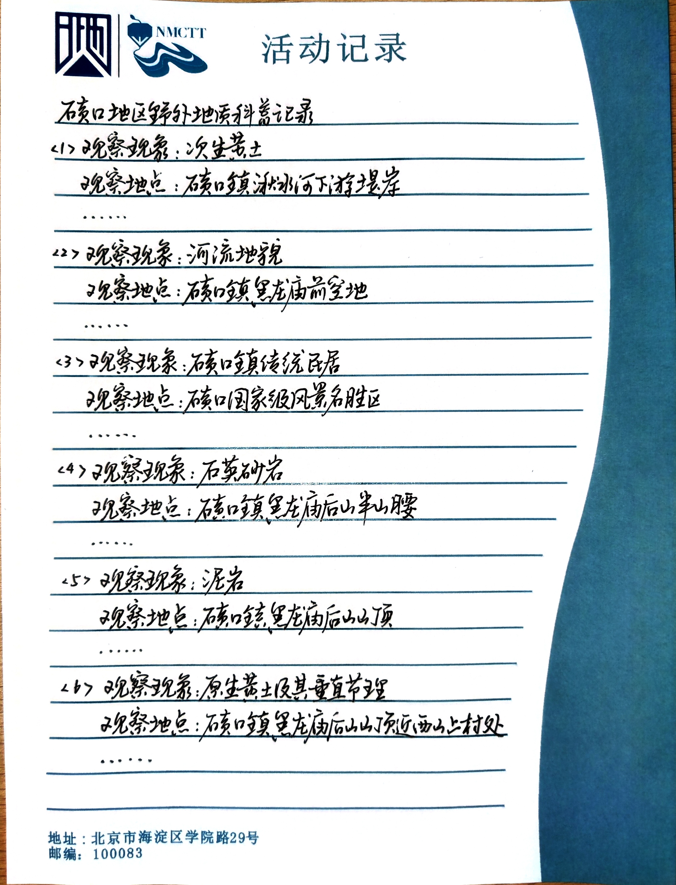
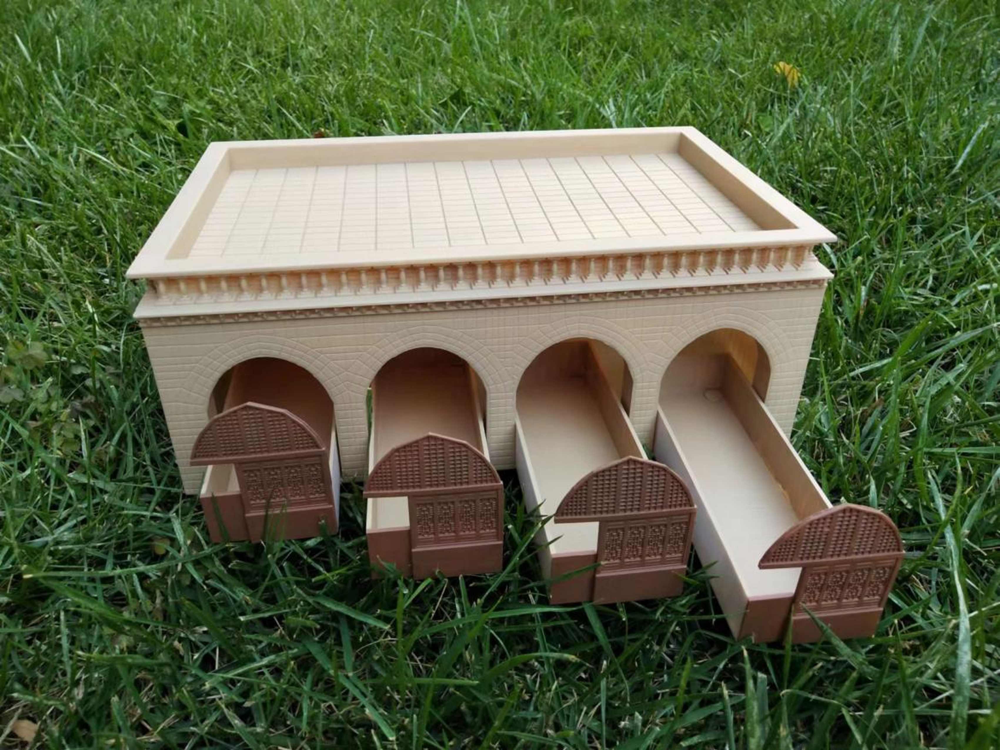
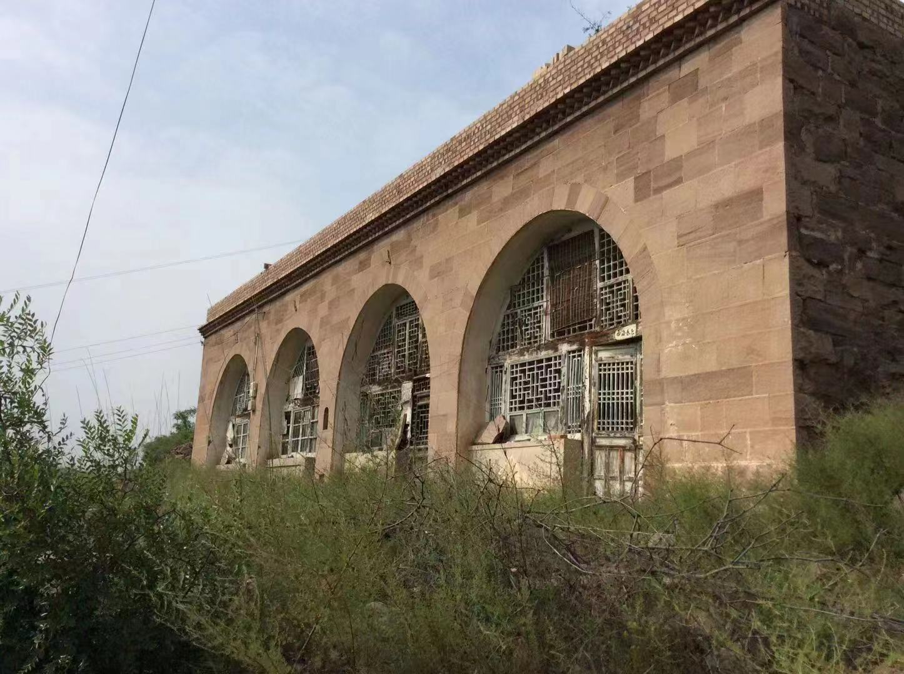

开启地质研学之旅
Start your geological research journey
课程介绍：详细介绍针对不同年龄段学生的研学旅行课程内容和特点。
我们的研学旅行课程旨在为不同年龄段的学生提供丰富多彩的学习体验，让他们在实践中深入探索地质科学的奥秘。以下是针对不同年龄段学生的课程内容和特点的详细介绍：
1. 小学生课程：
课程内容：小学生课程侧重于以趣味性和互动性为主导，通过游戏、观察和简单实验，引导学生认识地球的基本构造和地质现象。
特点：课程内容简单易懂，注重直观感受和实践操作，培养学生的好奇心和观察力，激发他们对自然科学的兴趣。
2. 初中生课程：
课程内容：初中生课程深入探讨地球科学的基本原理，包括板块构造理论、岩石形成和地质过程等内容，结合实地考察和实验，加深学生对地质学的理解。
特点：课程内容丰富多样，注重理论与实践相结合，引导学生从实践中探索地质科学的奥秘，培养他们的科学思维和实验技能。
3. 高中生课程：
课程内容：高中生课程涵盖了地质学的更深层次和更复杂的内容，如地球演化、矿物资源和环境地质等，通过实验、研究项目和学术讨论，培养学生的科研能力和问题解决能力。
特点：课程难度适中，注重理论知识的系统性和深度挖掘，同时注重培养学生的科学探究精神和创新思维，为他们未来的学术和职业发展奠定基础。
无论是小学生、初中生还是高中生，我们的研学旅行课程都致力于通过丰富多彩的实践活动，激发学生的学习兴趣，提升他们的科学素养，培养他们的综合能力，为他们的未来学习和发展打下坚实的基础。

3D打印体验：突出学生在研学旅行中可以亲手操作3D打印机制作地质模型的体验。
3D打印体验是我们研学旅行课程中的一大亮点，学生们将有机会亲身参与到这个充满创造力和技术感的过程中来。在这个活动中，他们将有机会使用3D打印机，亲手制作地质模型，将理论知识转化为实际操作的技能。通过这个体验，学生们不仅能够深入了解地质学的相关概念，还能够培养他们的动手能力和创造力。这种实践性的学习方式不仅能够激发学生的兴趣，还能够帮助他们更好地理解和应用所学知识。我们期待着在这个过程中，学生们能够获得愉悦的学习体验，以及对科学和技术的更深层次的理解。

实践活动：介绍研学旅行中的实地考察、互动实验等实践活动。
在我们的研学旅行中，实践活动是学生们能够亲身参与并深刻体验到的重要环节。以下是我们提供的实地考察和互动实验等实践活动的简介：
1.实地考察：学生们将有机会到达地质公园或自然风景区进行实地考察。在导游的带领下，他们将亲眼目睹各种地质景观，并学习到不同地质过程形成的地貌特征。通过实地考察，学生们将能够直观地感受到地质学理论知识与实际景观的联系。
2.互动实验：我们安排了一系列的互动实验，让学生们亲手操作仪器，进行实验观察和数据收集。这些实验涵盖了地质学的各个方面，例如岩石鉴定、地层分析、地震模拟等。通过参与这些实验，学生们将加深对地质学原理的理解，并培养实验设计和数据分析的能力。
3.团队合作项目：我们组织了一些团队合作项目，让学生们在小组中共同解决地质学问题或完成特定任务。这些项目旨在培养学生的团队合作能力、沟通能力和解决问题的能力，同时也增强了他们对地质学知识的应用能力。
通过这些实践活动，我们希望学生们能够在亲身体验中加深对地质学的理解，同时培养实践能力和团队合作精神，为他们未来的学习和发展打下坚实的基础。

报名与咨询：提供研学旅行课程的报名方式和咨询渠道。
欢迎您报名参加我们的研学旅行课程！您可以通过以下方式进行报名和咨询：
报名方式：
联系电话：19105088591
电子邮箱：1001210222@cugb.edu.cn
咨询渠道：
您可以随时拨打上述电话或发送电子邮件至指定邮箱，我们的工作人员将竭诚为您提供详细的课程信息、报名指导以及解答您可能有的任何疑问。期待您的参与，与我们一同探索知识的乐趣！